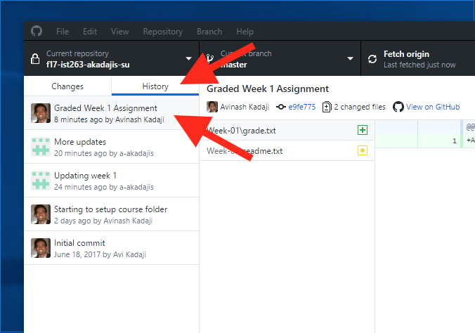

The steps in this page describe how to submit your homework, and pull homework grades and comments.
Couple of things to keep in mind
- You can submit and should aka commit your work as often as you want.
- I encourage you to commit your work everytime you work on it even if you have partially finished it.
- Committing code onto GitHub will ensure that there is a backup of your work
- Git will ONLY track your work that is done in the course folder you have setup
Submitting/Committing your homework
I assume you have done and saved your work in the class folder. Follow these steps everytime you want to commit your work.
- Launch the GitHub desktop client.
-
On a Windows PC it should look something like the pic below.
- Make sure the correct repo is selected (topmost arrow)
- 'Changes' will list all the files that have been changed since the last commit.
-
Enter a meaningful commit message - this is to help you remember what you have completed so far. Only you and the instructor will be able see this.
-
Click 'Commit to Master'. You will also notice that in the 'Changes' box it will read '0 changed files'.
-
Now we can upload the files to GitHub. Click 'Push Origin'.
-
Congratuations you just committed your work to GitHub.
How to check if homework has been submitted
Below are some of the ways you can check to make sure the homework has been successfully submitted.
Check via GitHub.com
- Login to GitHub at https://github.com
- Once you've logged in, look for 'Your Repositories' in the page and click on your 'IST263' repository.
- Clicking on the repo will bring you to the repo details page. Click on the 'Commits' tab to see when the latest commit was made.
Check on GitHub desktop application
Launch your GitHub desktop application, select your repository from the list. Then click on 'History' to see your commit history. The latest commit should show in there.
Commit Email
I have setup a custom notification to email me and you (the person submitting the homework) when a commit is posted. This should be instantaneous and mostly reliable.
Pulling homework feedback & points
I have cloned every student's course folder on my workstation. This allows me to review and comment on your work. After the homework is evaluated I will add notes/comments to your file(s) and assign the homework points.
Follow these steps to pull the homework points & feedback
-
Launch the GitHub desktop client.
-
It should look something like the pic below. Select your class repo by clicking on it.
-
Click 'Pull Origin' or 'Sync'. You can also click on 'Repository' -> 'Pull' from the application menu bar.
-
Click on 'History' tab to see that changes posted by the Instructor. 
-
If a feedback was posted to a HTML file you'll need to open that file in VS Code or Notepad++ to see the comments. If a grade was assigned look for a file 'grades.txt' in the homework folder for that week.
-
If the home due date hasn't passed you can revise the homework and resubmit.
Resolving Conflicts
With this pulling and pushing of code there is bound to be conflicts. Conflicts arise when you try to push code into GitHub but there are changes to the code on GitHub in the same module/vicinity which have been posted by the Instructor.
Avoiding this is the best fix. As a rule of thumb you should always 'pull' the latest code from GitHub prior to any coding session. At the end of the every coding session you should commit and push your code.
Now that you have a conflict lets figure out how to resolve it.
-
I assume you have committed your code but you got the error while trying to push the changes to GitHub.
-
The pic below shows how a file gets modified when a conflict appears.
Text between '<<<<<< HEAD', '========' and '>>>>>> origin/master' represents the conflict in the file between the local repository versus the remote server aka GitHub. -
You now have to review the file and choose how the text/code should appear by deleting/editing the text.
-
Make sure you remove the lines that have the above symbols.
-
Repeat steps 2 and 3 for each conflict that's reported.
-
Once you have reviewed and resolved all conflicts follow the steps to Commit and Push code as you would normally do.